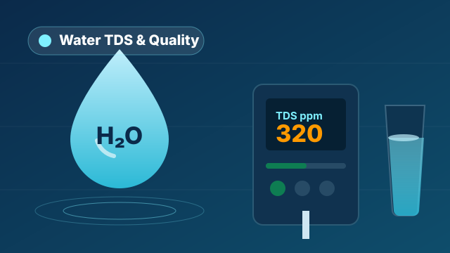

Borewell Water TDS: What's Safe & When Do You Need RO?

"TDS" shows up in every conversation about water — but what does it actually mean, and how much is fine for your borewell? This guide explains the right TDS range, the official limit, and when RO or a softener is genuinely needed.
What is TDS?
TDS stands for Total Dissolved Solids — the total amount of minerals and salts (such as calcium, magnesium, sodium and chloride) dissolved in water, measured in mg/L (or ppm). Very low TDS isn't ideal (the water tastes flat and lacks minerals), and very high TDS isn't good either (salty taste, scaling, and health effects).
The official TDS limit for drinking water
In India, drinking water follows the BIS (IS 10500) standard. According to it:
- Up to 500 mg/L — acceptable (the best range).
- 500 to 2000 mg/L — permissible only if no better source is available; treatment is better.
- Above 2000 mg/L — not recommended for drinking.
| TDS (mg/L) | Meaning | Suggestion |
|---|---|---|
| 50 – 300 | Very good | RO may not be needed; UV/UF is enough |
| 300 – 500 | Good (acceptable) | Check taste and source |
| 500 – 900 | Slightly high | RO is better |
| 900 – 2000 | High | RO recommended |
| 2000+ | Very high | RO essential (high-rejection) |
High TDS means RO. But what about hardness — softener?
This is a common mix-up. TDS and hardness are different things:
- RO plant — reduces overall TDS and impurities (for drinking).
- Water softener — removes only hardness (calcium/magnesium) so water feels "soft" and doesn't cause scaling. It's used for bathing, washing, boilers and as RO pre-treatment. See water softeners →
Borewells often need both: a softener first (for hardness), then RO (for drinking).
How to check your water's TDS
An inexpensive TDS meter or a water test kit lets you measure TDS at home. For more accurate results, a lab test — or sending a sample to us — works best. We then suggest the right system based on it.
Frequently Asked Questions
What is the best TDS for drinking water?
Roughly 50–300 mg/L is generally considered good. Up to 500 is acceptable. Very low (under 50) makes the water taste flat.
Is low-TDS water harmful?
Very low TDS strips out useful minerals. A good RO system uses a mineral/TDS controller to keep the balance right.
Should I install RO on a borewell?
If the TDS is well above 500 (especially 900+), RO is better for drinking. If hardness is also high, add a softener too. Share your TDS with us for the right advice.
← Back to all blogs